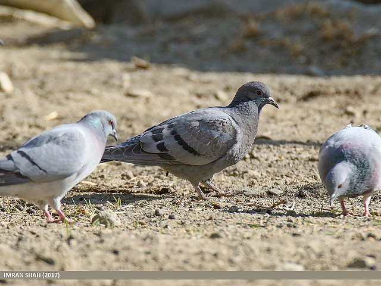

The domestic pigeon (Columba livia domestica or Columba livia forma domestica) is a pigeon subspecies that was derived from the rock dove (also called the rock pigeon). The rock pigeon is the world's oldest domesticated bird. Mesopotamian cuneiform tablets mention the domestication of pigeons more than 5,000 years ago, as do Egyptian hieroglyphics. Research suggests that domestication of pigeons occurred as early as 10,000 years ago. Pigeons have made contributions of considerable importance to humanity, especially in times of war. In war the homing ability of pigeons has been put to use by making them messengers. So-called war pigeons have carried many vital messages and some have been decorated for their services. Medals such as the Croix de Guerre, awarded to Cher Ami, and the Dickin Medal awarded to the pigeons G.I. Joe and Paddy, amongst 32 others, have been awarded to pigeons for their services in saving human lives.
Rock pigeon